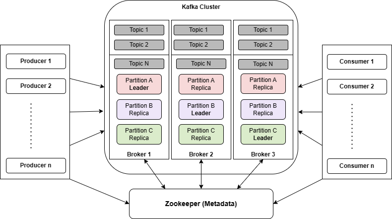

Apache Kafka is a powerful distributed event streaming platform that has gained immense popularity in recent years. It was originally developed by engineers at LinkedIn to address the challenges of handling real-time data feeds, and it has since evolved into an essential component for building scalable and resilient data pipelines.
Core Concepts

At the heart of Kafka’s design are several key concepts that make it well-suited for handling large volumes of streaming data. Kafka is built around a publish-subscribe model, where producers publish data to topics, and consumers subscribe to these topics to consume the data. This decoupling of producers and consumers enables efficient data distribution across multiple systems.
Kafka’s durable and fault-tolerant storage model ensures that data is retained for a configurable period, making it possible for consumers to access historical data. The concept of partitions allows Kafka to parallelize the storage and processing of data, enabling high-throughput and efficient scaling. Additionally, Kafka maintains the ordering of records within a partition, guaranteeing that data is processed in the same order it was produced.
Scalability and Fault Tolerance
One of the most significant advantages of Kafka is its ability to scale horizontally. It can handle millions of events per second across a distributed cluster of brokers, making it an ideal choice for high-throughput applications. Kafka’s design also ensures fault tolerance, with data replication and automatic failover mechanisms built in.
Kafka brokers are organized into clusters, and each broker can handle multiple partitions. This architecture allows Kafka to distribute the load across brokers and provides a seamless way to scale by adding more brokers to the cluster. The replication of data across multiple brokers ensures data durability, and in case of a broker failure, Kafka can continue serving data from the replicas.
Use Cases
Kafka’s versatility makes it suitable for various use cases, such as log aggregation, real-time data processing, event sourcing, and more. Its durability and real-time capabilities make it an excellent fit for applications requiring low-latency data ingestion and processing.
In the realm of log aggregation, Kafka can serve as a central hub for collecting and managing logs from various components in a distributed system. This is particularly valuable for debugging and monitoring purposes. For real-time data processing, Kafka acts as a real-time data pipeline, enabling applications to process incoming data streams as they arrive. The event sourcing pattern, where changes to the state of an application are captured as a series of events, can be implemented efficiently using Kafka.
Ecosystem and Integration
The Kafka ecosystem has grown over the years, with many tools and libraries developed around Kafka to simplify its usage. This includes connectors for integrating Kafka with popular data storage and processing systems, making it easier to build end-to-end data pipelines.
Kafka Connect provides a framework for building and running connectors that move data into or out of Kafka. This integration capability is essential for connecting Kafka with data storage systems like databases, data lakes, and cloud storage. For data processing, Kafka can be integrated with stream processing frameworks like Apache Kafka Streams and Apache Flink, enabling real-time data processing and analytics.
In this introduction, we’ve touched upon some of the fundamental aspects of Apache Kafka. Whether you’re dealing with real-time data streams, building robust data pipelines, or architecting high-throughput applications, Kafka provides a reliable and scalable foundation for your streaming needs.
This expanded introduction provides more details on Kafka’s core concepts, scalability, fault tolerance, use cases, and its ecosystem of integrations. It should help your readers gain a deeper understanding of the capabilities and advantages of Apache Kafka.